QwenLong-L1：通过强化学习迈向长上下文大推理模型
Alibaba Group，通义实验室
https://github.com/Tongyi-Zhiwen/QwenLong-L1
https://huggingface.co/Tongyi-Zhiwen/QwenLong-L1-32B
https://modelscope.cn/models/iic/QwenLong-L1-32B
摘要
近期的大推理模型（LRM）通过强化学习（RL）展现出了强大的推理能力。这些提升主要出现在短上下文推理任务中。相比之下，通过 RL 扩展 LRM，使其有效处理长上下文输入并基于这些输入进行推理，仍是一个尚未解决的关键挑战。为了弥合这一差距，我们首先形式化长上下文推理 RL 范式，并识别出训练效率欠佳和优化过程不稳定这两项关键挑战。为解决这些问题，我们提出 QwenLong-L1，这是一个通过渐进式上下文扩展，将短上下文 LRM 适配到长上下文场景的框架。具体而言，我们利用 warmup 监督微调（SFT）阶段建立稳健的初始策略，随后采用课程引导的分阶段 RL 技术稳定策略演化，并通过难度感知的回顾采样策略进一步激励策略探索。在七个长上下文文档问答基准上的实验表明，QwenLong-L1-32B 超过了 OpenAI-o3-mini 和 Qwen3-235B-A22B 等旗舰 LRM，达到了与 Claude-3.7-Sonnet-Thinking 相当的性能，在最先进的 LRM 中表现领先。这项工作推进了实用长上下文 LRM 的发展，使其能够在信息密集环境中进行稳健推理。
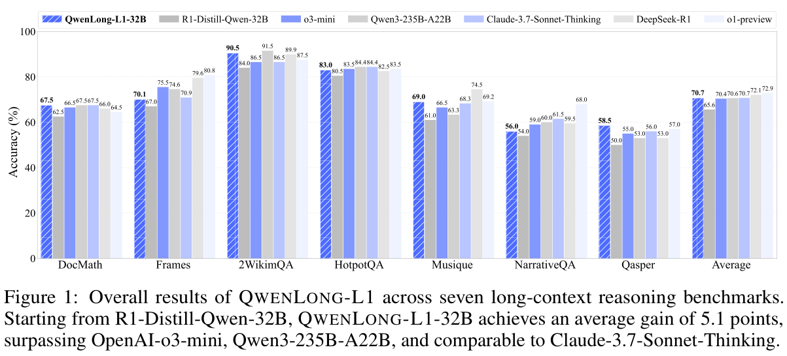
* 通讯作者。
预印本。工作进行中。
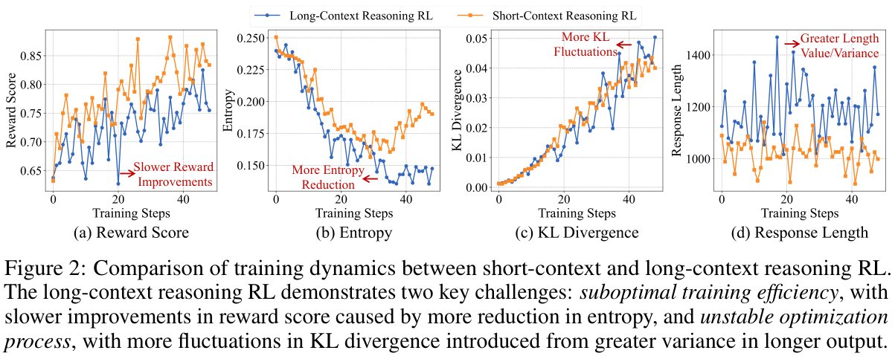
1 引言
近期大推理模型（LRM）的突破展示出推理能力的显著提升，在复杂问题求解场景中实现了与人类专家相当的性能 [49]。以 OpenAI-o1 [26, 15]、DeepSeek-R1 [6, 11] 和 Qwen-QwQ [41, 43] 为代表的这些进展，激发了大量研究，通过强化学习（RL）探索并增强广泛的推理任务，从基础逻辑推理 [29, 47] 到编程 [8, 7] 和数学 [24, 39] 中的高阶挑战，RL 算法的创新不断推动推理质量的提升 [3, 55, 23, 54]。
经过 RL 微调后，LRM 会出现一种类似人类“慢思考”的现象 [4]，其特征是在扩展的思维链（CoT）推理输出中涌现分治与回溯机制等复杂问题求解策略 [46]。虽然这一过程提升了短上下文任务（例如 4K token）的推理表现 [45, 22]，但它能否扩展到需要稳健上下文依据与多步推理的长上下文场景（例如 120K token），仍未得到探索。这一局限对需要与外部知识交互的实际应用构成重大障碍，例如深度研究 [38, 27, 40]，其中 LRM 必须从知识密集环境中收集和处理信息。
为阐明这一问题，我们首先引入长上下文推理 RL 的概念。短上下文推理 RL 主要依赖存储在模型参数中的内部知识，与之不同，长上下文推理 RL 要求 LRM 从长上下文输入中检索并定位相关信息，再基于所整合的信息生成推理链 [12, 30, 52]。为说明短上下文与长上下文推理 RL 的差异，我们进行了初步实验，对比图 2 中的训练动态。结果显示，相比短上下文推理 RL，长上下文推理 RL 的训练效率欠佳，表现为（a）奖励收敛延迟。这种差异源于（b）处理长上下文输入时输出熵明显降低，限制了策略优化过程中的探索行为。此外，我们发现优化过程不稳定，表现为（c）KL 散度间歇性地出现尖峰。这种不稳定性来自于（d）异质输入长度分布下更长的输出长度所带来的固有方差放大，导致策略更新期间的变动更大。
为应对这些挑战，我们提出 QwenLong-L1，这是一个旨在促进 LRM 从擅长短上下文转向稳健长上下文泛化的新型 RL 框架，如图 3 所示。受近期预训练阶段上下文扩展研究 [9, 48, 10] 的启发，我们的框架在 RL 训练期间通过渐进式上下文扩展增强短上下文 LRM。该框架包括三个核心组件：初始化稳健策略的 warmup SFT 阶段、促进从短上下文向长上下文稳定适配的课程引导 RL 阶段，以及通过调整各阶段训练复杂度来激励策略探索的难度感知回顾采样机制。利用 GRPO [34] 和 DAPO [54] 等近期 RL 算法，我们的框架整合了将基于规则和基于模型的二元结果奖励结合起来的混合奖励函数，以平衡精确率与召回率。通过策略优化期间有策略地利用组相对优势，它引导 LRM——
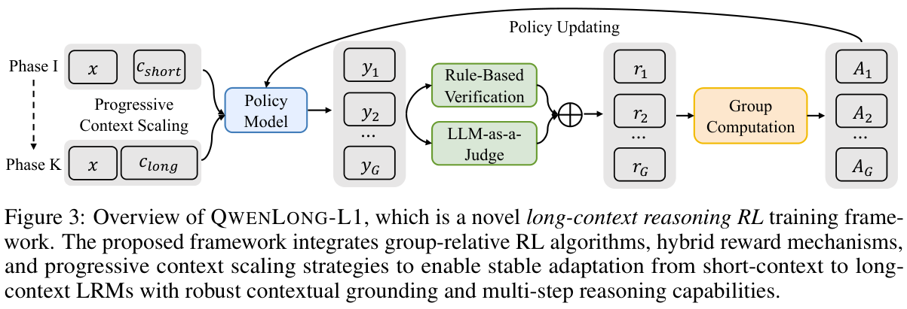
（接第 2 页）学习长上下文推理场景所必需的有效推理模式，从而实现稳健的长上下文信息定位与出色的推理能力。
在实验中，我们将文档问答（DocQA）[51, 17, 13] 作为具有代表性的现实长上下文推理任务。具体而言，我们引入 DOCQA-RL-1.6K，这是一个专门的 RL 训练数据集，包含 1.6K 个涵盖数学、逻辑和多跳推理领域的 DocQA 问题。在七个长上下文 DocQA 基准上的实验结果证明，QwenLong-L1 优于多种专有和开源 LRM。值得关注的是，QwenLong-L1-14B 超过 Gemini-2.0-Flash-Thinking 和 Qwen3-32B，而 QwenLong-L1-32B 超过 OpenAI-o3-mini、Qwen3-235B-A22B，甚至与 Claude-3.7-Sonnet-Thinking 相当。我们的分析进一步发现长上下文推理 RL 优化中的几个关键认识：（1）渐进式上下文扩展促进更高的熵并稳定 KL 散度，从而提升训练效率；（2）SFT 是提升性能的经济方式，而 RL 释放实现最优性能的潜力；（3）RL 自然促进专门的长上下文推理行为，从而提升最终性能，但在 SFT 中模仿这些行为并不会带来收益。我们的主要贡献总结如下：
- 我们提出长上下文推理 RL 范式的概念，并识别其独有挑战，进一步推进实用长上下文 LRM 的发展，使其能够在复杂的现实推理场景中定位并整合信息。
- 我们提出 QwenLong-L1，这是首个为长上下文 LRM 设计的 RL 框架。通过渐进式上下文扩展，QwenLong-L1 利用组相对 RL 优化和混合奖励机制，实现从短上下文到长上下文的稳定适配。
- 我们通过在七个长上下文文档问答基准上的全面实验，展示 QwenLong-L1 的有效性。结果显示，相比最前沿的 LRM，QwenLong-L1 实现了显著的性能提升，为长上下文推理优化提供了基础配方与实践。
2 长上下文推理强化学习
虽然现有工作已经探索利用强化学习（RL）增强短上下文推理任务 [14, 56, 16]，但将其扩展到长上下文推理 RL 仍是一个未解决的挑战。为此，我们引入 QwenLong-L1，这是首个专门针对长上下文推理设计的 RL 框架。本节先介绍基础知识，再详述实现，包括用于长上下文推理的 RL 算法、用于稳定优化的渐进式上下文扩展策略，以及平衡评估精确率与召回率的混合奖励机制。
2.1 基础知识
语言模型的标准 RL 目标优化经过 KL 正则化的期望奖励 [32]：
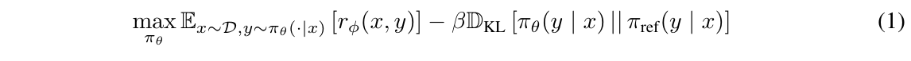
其中，\(r_{\phi }(x, y)\) 表示策略模型 \(\pi _{\theta }\) 对输入 \(x\) 生成输出 \(y\) 时得到的奖励，\(\pi _{\mathrm{ref}}\) 表示用于 \(D_{\mathrm{KL}}\) 正则化的参考模型。
与先前工作不同，先前输入 \(x\) 通常是一个短问题，要求策略模型 \(\pi _{\theta }\) 根据参数化知识生成输出 \(y\)，而我们将这一形式扩展为包含额外的长上下文 \(c\)。因此，策略模型 \(\pi _{\theta }\) 需要先从 \(c\) 中定位相关信息，再提供推理链来解决问题 \(x\)：
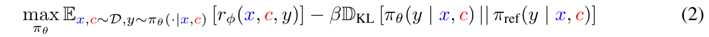
上下文 \(c\) 和问题 \(x\) 通过以下 prompt 模板拼接：
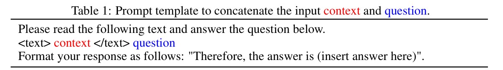
2.2 RL 算法
代理策略优化（Proxy Policy Optimization，PPO）。为利用上述目标优化策略模型 \(\pi _{\theta }\)，PPO [33] 算法提出最大化经过 clipping 的代理目标：
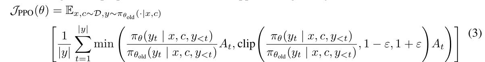
其中，\(\pi _{\theta }\) 为当前策略模型，\(\pi _{\theta_{\mathrm{old}}}\) 为更新前的旧策略模型，\(\varepsilon\) 为 clipping 超参数，\(A_{t}\) 为第 \(t\) 个 token 的优势估计值。对于给定的输入上下文 \(c\) 和问题 \(x\)，\(\pi _{\theta_{\mathrm{old}}}\) 首先生成序列输出 \(y\)，然后利用学习得到的价值函数 \(V_{\phi }\)，通过广义优势估计（GAE）[31] 计算 \(A_{t}\)，用于更新 \(\pi _{\theta }\)。
对于长上下文输入，attention 机制的二次复杂度使价值网络训练在计算上难以承受。因此，我们选择包括 GRPO [34] 和 DAPO [54] 在内的组相对 RL 算法，通过组内归一化的奖励来估计优势，而不使用额外的价值网络。
组相对策略优化（GRPO）。在 GRPO 中，给定上下文 \(c\) 和问题 \(x\)，旧策略模型 \(\pi _{\theta_{\mathrm{old}}}\) 生成一组 \(G\) 个输出 \(\{y_{i}\}_{i=1}^{G}\)，由奖励函数计算对应奖励 \(\{r_{i}\}_{i=1}^{G}\)。策略模型 \(\pi _{\theta }\) 的优化目标变为：
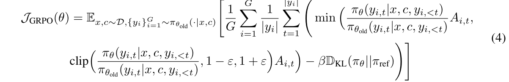
其中，token \(y_{i,t}\) 的优势通过对组级奖励进行归一化来估计：
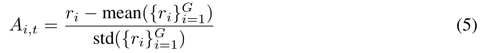
在我们的实现中，遵循近期工作中的常见建议 [14, 23, 54]，我们去掉 GRPO 目标中的 KL 项，以鼓励策略模型的探索能力。
解耦 clipping 与动态采样策略优化（DAPO）。DAPO 整合数种技术以确保 RL 过程更加稳定高效：（1）使用更高的 clipping 阈值避免熵崩塌，（2）利用动态采样策略移除奖励方差为零的样本，（3）采用 token 级损失减轻长度偏差，以及（4）通过超长奖励塑形避免过长输出。策略模型 \(\pi _{\theta }\) 的优化目标为：
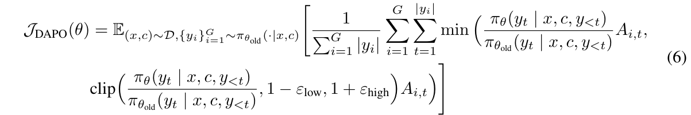
其中，\(\varepsilon _{\mathrm{low}}\) 和 \(\varepsilon _{\mathrm{high}}\) 分别为下限和上限 clipping 阈值。动态采样策略确保样本具有非零奖励方差，token 级损失则在损失计算时为输出中的每个 token 赋予相同权重。超长奖励塑形设置如下软长度奖励惩罚：
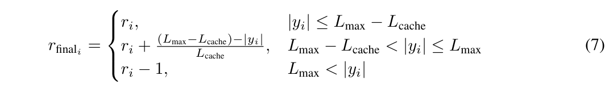
其中，\(L_{\mathrm{max}}\) 为最大序列长度，\(L_{\mathrm{cache}}\) 为逐步施加长度惩罚的缓冲区。与 GRPO 不同，DAPO 中 \(y_{i,t}\) 的最终优势变为：
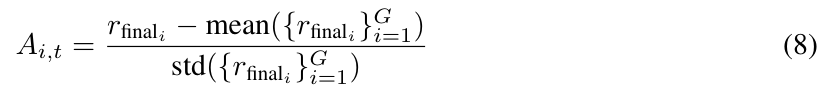
2.3 渐进式上下文扩展
针对长上下文推理训练 LRM 会出现不稳定的优化动态。为解决这些问题，我们提出渐进式上下文扩展框架，包括用于稳定从短到长上下文优化的课程引导 RL 策略、优先探索复杂样本的难度感知回顾采样机制，以及在 RL 训练之前提供稳健初始化的 warmup SFT 阶段。
课程引导的分阶段强化学习。RL 过程被划分为 \(K\) 个离散阶段，各阶段的目标上下文长度为 \(L_{k}\)。从初始输入长度 \(L_{1}\) 开始，每个后续阶段都会增加输入长度，直到达到最大目标长度 \(L_{K}\)。在阶段 \(k\) 中，策略模型 \(\pi _{\theta }\) 仅在满足以下条件的样本上训练：
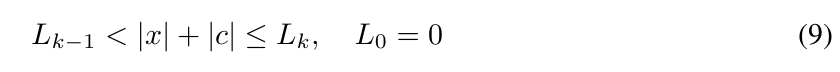
其中，\(|x|\) 和 \(|c|\) 分别表示问题长度和支持上下文长度。
难度感知的回顾采样。基于先前数据选择研究中样本难度的关键作用 [59, 19]，我们采用难度感知的回顾采样方法，有策略地纳入先前阶段的样本。具体而言，我们使用按难度分数加权的重要性采样来筛选回顾样本：
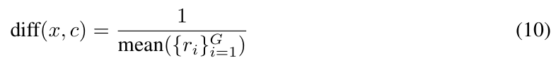
其中，\(\operatorname{diff}(\cdot)\) 表示难度函数，其值由基础模型生成的一组输出所获得的奖励 \(\{r_{i}\}_{i=1}^{G}\) 的均值倒数来量化。较低的平均奖励对应较高的难度分数，使回顾采样优先选取有挑战性的样本。
Warmup 监督微调。在开始 RL 训练之前，我们采用 warmup SFT 阶段，建立一个能够从长上下文输入中定位信息的稳健初始策略模型。这一关键准备阶段确保策略模型在接触不稳定的 RL 优化之前，具备上下文理解、推理链生成与答案提取的基本能力。
SFT 过程使用从教师 LRM 蒸馏得到的高质量示范 \(D_{\mathrm{SFT}}\)，每个样本包含问题 \(x\)、支持上下文 \(c\) 和经验证正确的标准推理路径 \(y^{*}\)。为与渐进式扩展课程一致，我们在课程引导 RL 的初始输入长度 \(L_{1}\) 范围内构建 \(D_{\mathrm{SFT}}\)。模型通过最小化标准负对数似然目标进行训练：
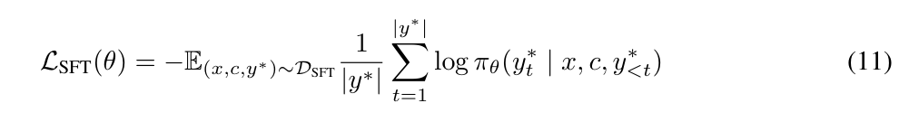
所得 SFT 模型作为 RL 训练的初始策略 \(\pi _{\theta }\)，提供稳定的起始参数。在第 4.2 节中，我们展示了所提出的三种策略在推理 RL 中稳定地将上下文从短扩展到长的有效性。
2.4 混合奖励机制
以往数学、编程和逻辑推理中的短上下文推理任务 [24, 7, 47] 通常使用基于规则的奖励函数，通过严格答案匹配和格式验证优先保证精确率，以缓解 reward hacking 风险 [35]。然而，开放域问答等长上下文推理任务由于答案本身具有多样性，存在独特挑战。在这种情况下，过度严格的基于规则的奖励可能限制有效答案的变体，从而损害整体表现。为解决这些局限，我们提出一种混合奖励机制，将基于规则的验证 [11] 与 LLM-as-a-Judge [58] 结合，通过互补评估平衡精确率与召回率。
基于规则的验证。基于规则的组件 \(r_{\mathrm{rule}}\) 通过验证是否严格遵守特定任务的正确性标准来保证精确率。对于问答任务，我们首先利用与表 1 结构化 prompt 模板一致的正则表达式，从模型生成的 \(y\) 中提取最终答案 \(y_{\mathrm{ans}}\)，然后与标准答案 \(y_{\mathrm{gold}}\) 进行精确字符串匹配：
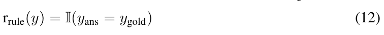
其中，\(I\) 表示指示函数。特别是，我们有意省略用于答案提取的格式奖励，因为基础模型已经表现出充分的内在格式遵循能力；过多的格式奖励可能使学习目标过于简单，进而阻碍模型探索推理链的能力 [56, 16]。
LLM-as-a-Judge。为补充以精确率为导向的规则组件，并处理字符串匹配中可能出现的假阴性，我们引入基于 LLM 的评估器 \(r_{\mathrm{LLM}}\)，评估生成答案与标准答案之间的语义等价性：
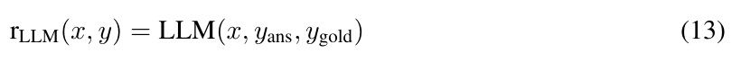
其中，LLM 裁判依据以下评估模板给出二元正确性分数：
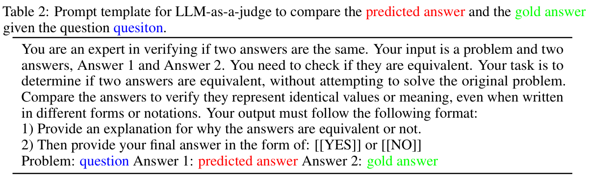
表 2 的 prompt 译文：你是验证两个答案是否相同的专家。你的输入是一个问题和两个答案，即答案 1 和答案 2。你需要检查它们是否等价。你的任务是确定两个答案是否等价，不要尝试解决原始问题。比较答案以验证它们是否表示相同的数值或含义，即使它们采用了不同的形式或记法。你的输出必须遵循以下格式：1）解释为什么这两个答案等价或不等价。2）然后以下列形式给出最终答案：[[YES]] 或 [[NO]]。问题：question；答案 1：predicted answer；答案 2：gold answer。
组合奖励形式。整合后的奖励函数通过取最大值，将基于规则的验证与 LLM-as-a-Judge 结合：
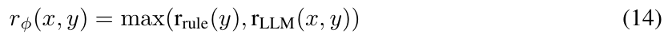
鉴于答案比较任务相对简单，我们采用较小的模型，例如 Qwen2.5-1.5B-Instruct [50]，并将 temperature 设为零，以获得确定性评分。这种配置在保持评估可靠性的同时，能够在在线 RL 训练中高效计算奖励。
3 实验设置
在实验中，我们使用文档问答（DocQA）作为长上下文推理能力的主要评估任务，因为它天然需要上下文信息定位与多步推理。本节详细介绍训练和评估的实验设置。
3.1 训练数据集
RL 数据集。为构建一个具有挑战性的、用于可验证长上下文推理的 RL 数据集，我们开发 DOCQA-RL-1.6K，包含三个推理领域的 1.6K 个 DocQA 问题：（1）——
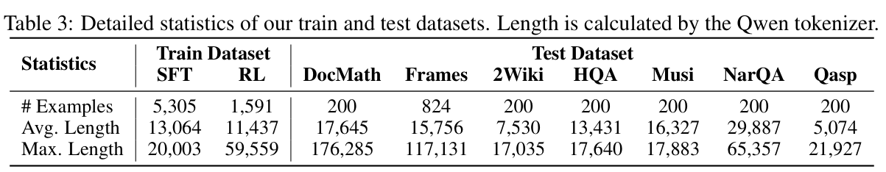
（接第 6 页）（1）数学推理：我们使用 DocMath [57] 数据集中的 600 个问题，要求跨财务报告等长篇专业文档进行数值推理2；（2）逻辑推理：我们使用 DeepSeek-R1 [11]，基于我们整理的真实文档集合合成 600 个选择题，要求对法律、金融、保险和生产领域的文档进行逻辑分析；（3）多跳推理：我们从 MultiHopRAG [36] 中采样 200 个样本，并从 Musique [44] 中采样 200 个样本，重点考察跨文档推理。
SFT 数据集。为建立稳健的 RL 优化起点，我们通过 DeepSeek-R1 [11] 蒸馏 5.3K 个高质量的问题—文档—答案三元组。与近期针对 LRM 的数据整理方法 [25, 53] 一致，我们依据质量、复杂度和多样性对问题进行清洗与过滤。此外，我们控制文档质量和长度，确保上下文信息准确。表 3 给出 RL 与 SFT 数据集的统计信息。
3.2 训练细节
基础模型。在实验中，我们使用 R1-Distill-Qwen-14B 和 R1-Distill-Qwen-32B [11] 初始化基础模型，随后执行 SFT 与 RL 优化阶段3。
RL 训练。如第 2.3 节所述，我们为长上下文推理 RL 优化提出渐进式上下文扩展机制。具体而言，训练过程采用两阶段课程上下文扩展，阶段 I 的输入长度 \(L_{1}\) 为 20K，阶段 II 的输入长度 \(L_{2}\) 为 60K。我们引入难度感知回顾采样，将阶段 I 中平均准确率为零、最困难的样本保留到阶段 II。训练在 32 块 A100-80G GPU 上进行，训练 batch size 为 128，mini-batch size 为 32，rollout 数量为 8，学习率为 2e-6。采样时将 temperature 设为 0.7，top-p 设为 0.95，最大输出长度设为 10K。
SFT 训练。SFT 阶段的输入长度设为 20K。训练在 32 块 A100-80G GPU 上进行 3 个 epoch，训练 batch size 为 128，学习率为 5e-6。
3.3 评估细节
基准。我们在七个长上下文 DocQA 基准上进行评估，包括 2WikiMultihopQA [13]、HotpotQA [51]、Musique [44]、NarrativeQA [17]、Qasper [5] 和 Frames [18] 等多跳推理基准4，以及 DocMath [57] 等数学推理基准。与第 2.4 节的奖励函数一致，我们报告精确匹配准确率与 LLM 裁判准确率中的最大值，作为最终分数。我们使用 DeepSeek-V3 [21] 作为裁判模型，temperature 为 0.0，以提供可靠评估。基准统计信息见表 3。
配置。我们评估长上下文 LRM 时，最大输入长度为 120K，输出长度为 10K。对于上下文长度有限的专有 LRM，我们将最大输入长度设为 50K。我们采用 zero-shot 评估，temperature 为 0.7，top-p 为 0.95。
3.4 基线
我们将 QwenLong-L1 与以下最先进的 LRM 比较。
专有 LRM：OpenAI-o1-preview [15]、Claude-3.7-Sonnet-Thinking [1]、OpenAI-o3-mini [28]、Qwen3-Plus [42]、QwQ-Plus [43] 和 Gemini-2.0-Flash-Thinking [37]。
开源 LRM：DeepSeek-R1 [11]、Qwen3-235B-A22B [42]、Qwen3-32B [42]、QwQ-32B [43]、R1-Distill-Qwen-32B [11] 和 R1-Distill-Qwen-14B [11]。
2 对于 DocMath，我们从 valid split 的每个子集中采样 75% 的条目用于训练，25% 用于评估。
3 我们排除 7B/1.5B 变体，因为它们具有继承自 Qwen2.5-Math [50] 的数学推理特性。
4 对于 2WikiMultihopQA、HotpotQA、Musique、NarrativeQA 和 Qasper，我们使用 LongBench [2] 的数据。
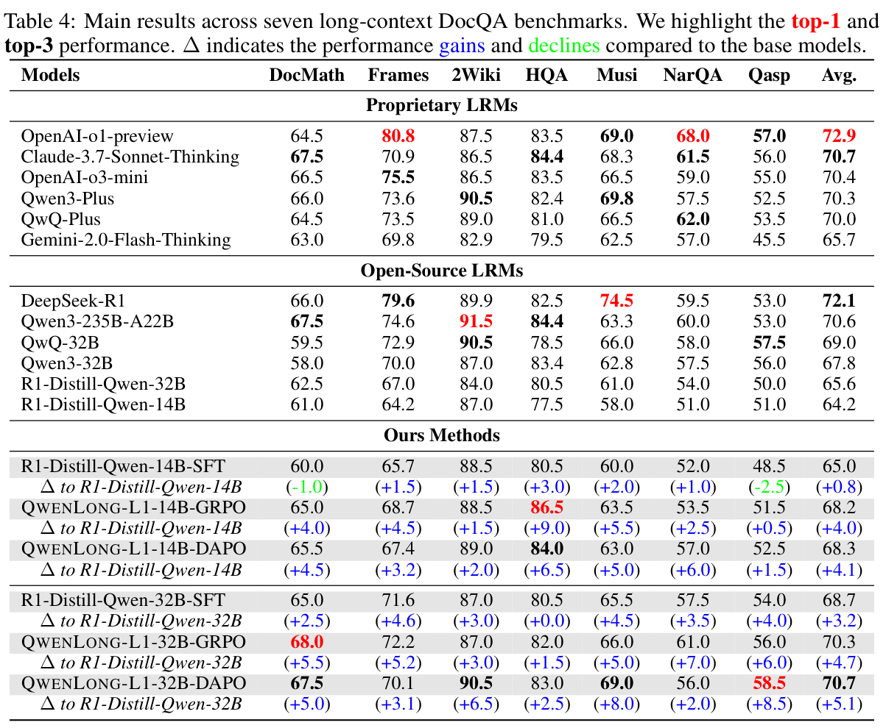
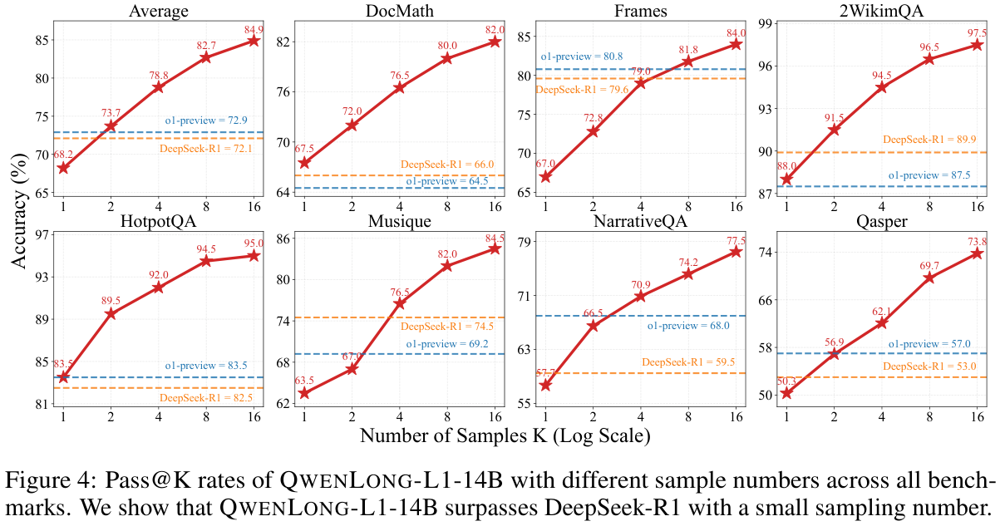
4 实验结果与分析
4.1 主要结果
表 4 展示 QwenLong-L1 在七个长上下文文档问答（DocQA）基准上的整体表现。关键发现如下：
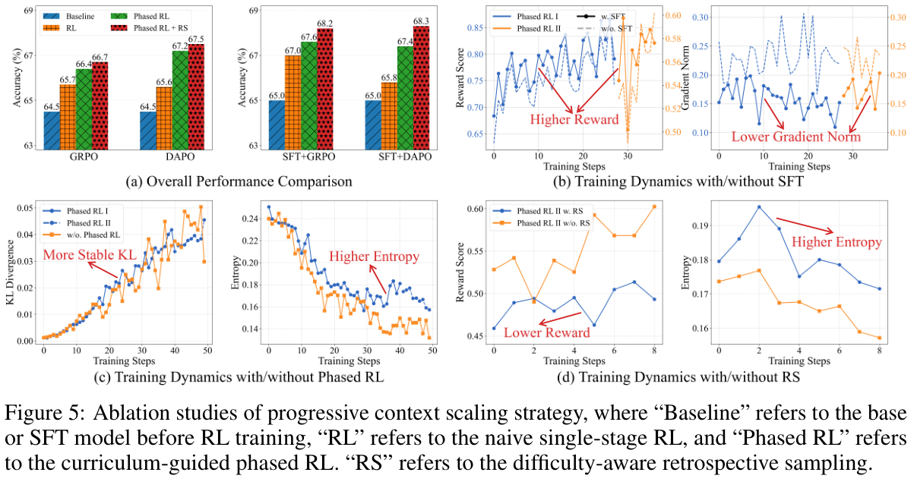
SFT 对长上下文推理的效果有限。由于基础模型 R1-Distill-Qwen 主要针对数学、编程和科学领域的短上下文推理任务进行优化，我们按照第 2.3 节的说明，在 RL 训练前进行 SFT，使其适配长上下文推理。尽管采取这一干预，SFT 模型在 14B 上的平均增益仅为 0.8 分，在 32B 上仅为 3.2 分。此外，不同基准上的提升差异显著，表明 SFT 方法在长上下文推理场景中的泛化能力有限。
整合 RL 带来显著提升。通过整合 RL，QwenLong-L1 的长上下文推理表现取得了显著进展。具体而言，QwenLong-L1-14B 使用 DAPO 和 GRPO 时，相比基础模型分别平均提升 4.1 和 4.0 分，大幅超过 SFT 基线的 0.4 分提升。此外，扩展到 32B 基础模型时，QwenLong-L1-32B 使用 DAPO 和 GRPO 时，性能甚至分别提升 5.1 和 4.7 分。这些结果凸显 RL 方法通过组相对优势估计与对 on-policy 采样输出的激励，调整输出分布以应对复杂、依赖上下文的推理问题的卓越能力。
在旗舰 LRM 中表现领先。我们的评估显示，QwenLong-L1 相比领先的专有和开源 LRM 具有更好的表现。具体而言，QwenLong-L1-14B 的平均得分为 68.3，超过 Gemini-2.0-Flash-Thinking、R1-Distill-Qwen-32B 和 Qwen3-32B，同时达到与 QwQ-32B 相当的表现。此外，QwenLong-L1-32B 的平均得分为 70.7，超过 QwQ-Plus、Qwen3-Plus、Qwen3-235B-A22B 和 OpenAI-o3-mini，甚至与 Claude-3.7-Sonnet-Thinking 相当，在最先进的旗舰 LRM 中表现领先。
Test-time scaling 带来的额外增强。我们进一步开展实验，分析 QwenLong-L1 的 test-time scaling 表现。遵循已有工作 [11, 45]，我们为每个输入问题生成 16 个候选输出，并评估 Pass@K，以量化其在所有基准上的探索能力。如图 4 所示，QwenLong-L1-14B 随着采样规模增加，持续获得性能增强。值得关注的是，QwenLong-L1-14B 的增益显著，即使采样数量较小，也能超过 DeepSeek-R1 和 OpenAI-o1-preview。具体而言，它在所有基准上的平均 Pass@2 达到 73.7，超过 DeepSeek-R1 的 72.1 和 OpenAI-o1-preview 的 72.9，凸显 test-time scaling 的有效性。此外，Pass@K 与 Pass@1 指标间的显著差距说明，RL 训练仍有潜力更好地连接从多样化探索到最优利用的转变。
4.2 消融研究
本节通过消融研究，考察 QwenLong-L1 中使长上下文推理 RL 能够成功实现渐进式上下文扩展的关键组件，包括 warmup——
（接第 9 页）SFT、课程引导的分阶段强化学习，以及难度感知的回顾采样，实验结果见图 5。
Warmup SFT。为说明 warmup SFT 的影响，我们首先使用多种 RL 算法与训练策略，评估在包含或不包含这一准备阶段的情况下训练出的模型，在七个基准上的整体表现。如图 5（a）所示，整合 warmup SFT 在所有实验设置下都带来显著的性能提升。为进一步探究 warmup SFT 在 RL 动态中的作用机制，图 5（b）跟踪了训练期间的奖励分数和 gradient 范数。结果显示，warmup SFT 不仅加快奖励提升，还在不同 RL 阶段维持更低的 gradient 范数，证明它在将模型从短上下文迁移到长上下文推理任务时，能够优先促进性能提升，而非格式对齐。这些发现凸显将 SFT 作为前置阶段、为 RL 训练提供稳健而高效初始化的必要性。
课程引导的分阶段强化学习。如图 5（a）所示，我们在 GRPO、DAPO、SFT + GRPO 和 SFT + DAPO 等不同训练配置下，对比朴素单阶段 RL 与所提出的课程引导分阶段 RL。结果显示，我们的分阶段 RL 方法取得了显著的性能提升。我们也注意到，以 SFT 初始化模型时，这一提升不那么明显，说明 warmup 训练部分补偿了课程设计。图 5（c）的进一步分析显示，单阶段 RL 的不稳定性更强，表现为 KL 散度波动与熵崩塌。这些结果证实了课程引导的分阶段训练在推理 RL 从短到长上下文的稳定策略演化中所起的关键作用。
难度感知的回顾采样。为维持对困难样本的广泛探索，我们引入难度感知回顾采样策略，将先前训练阶段的一部分困难样本整合到当前训练数据中。如图 5（a）所示，这一策略在分阶段 RL 基础上带来进一步的性能增强。具体而言，图 5（d）显示，尽管这些保留的困难样本已经经历阶段 I 的 RL 训练，它们仍带来显著更低的奖励和更高的策略熵，从而激励策略模型加强探索过程。
4.3 补充分析
本节考察长上下文 LRM 发展相关的问题，重点关注优化长上下文推理能力时 SFT 与 RL 之间的权衡，以及训练期间长上下文推理行为的涌现和动态。
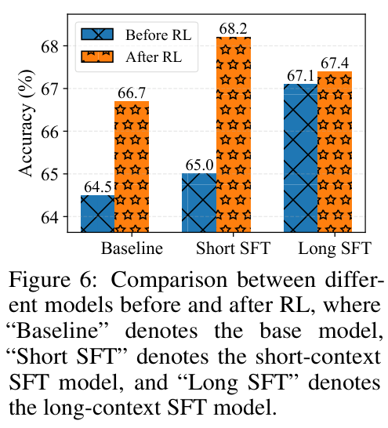
优化中 SFT 与 RL 的权衡。如第 4.2 节所述，SFT 为 RL 训练提供稳健初始化。然而，由于实验中的初始 SFT 阶段依赖短上下文训练数据，一个关键问题随之出现：长上下文 SFT 的作用是什么，它会如何影响 RL？为此，我们使用从 DeepSeek-R1 蒸馏出的 10K 个上下文—问题—答案三元组训练长上下文 SFT 模型，保持与短上下文 SFT 阶段相同的数据分布。该长上下文 SFT 模型作为单阶段 RL 训练的起点；由于它本身已具备长上下文能力，训练不采用渐进式上下文扩展。
如图 6 所示，长上下文 SFT 模型超过基础模型 2.6 分，超过短上下文 SFT 模型 2.1 分。尽管需要更多训练数据，SFT 在实践中仍有明显优势，包括更低的计算复杂度、更少的基础设施需求，以及更低的专业技术依赖，因此是一种经济的性能提升策略 [11]。然而，在长上下文 SFT 模型上进一步施加 RL，只带来有限提升，增益仅 0.3 分，最终得分为 67.4，明显低于在短上下文 SFT 模型上进行 RL 时的 3.2 分提升与 68.2 最终得分。这些结果揭示了长上下文 LRM 发展的两点认识：（1）SFT 与 RL 有不同但互补的目的：SFT 用较少投入获得可接受的性能，而 RL 对于取得最优结果不可或缺；
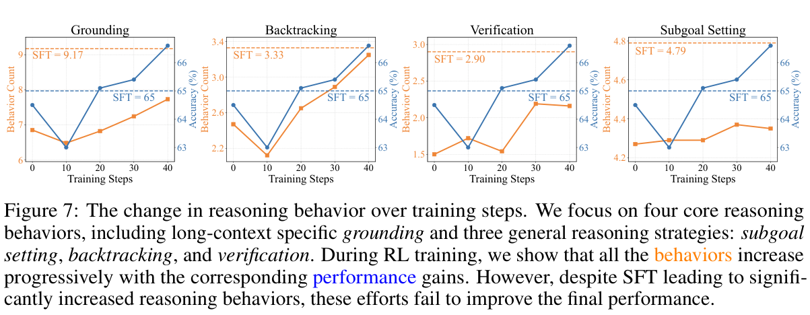
（接第 10 页）（2）最大化性能需要优先考虑 RL 而非 SFT，因为过度关注 SFT 可能使模型陷入局部最优，从而限制 RL 提升的机会。
长上下文推理行为的涌现与动态。推理行为对 LRM 的推理轨迹和奖励具有关键影响 [11, 14]。为考察这些动态，我们遵循近期研究 [56, 23]，分析 SFT 与 RL 训练期间推理行为的演变。具体而言，我们使用 DeepSeek-V3 [21] 提取并跟踪四种核心推理行为的平均出现次数随训练步数的变化，包括长上下文特有的信息定位，以及三种通用推理行为：子目标设定、回溯和验证：
- 信息定位：模型回忆长上下文中的相关信息，以支持后续推理，例如“让我查阅给定文本，寻找……”。
- 子目标设定：模型将复杂问题拆分成多个可处理的子目标，逐步解决，例如“要解决这个问题，我们首先需要……”。
- 回溯：模型识别生成内容中的错误，并返回迭代修正方法，例如“这个方法行不通，因为……”。
- 验证：模型通过自我反思系统地验证预测答案，确保解答正确，例如“让我们通过……验证这个结果”。
图 7 的结果揭示三点认识：（1）所有 LRM 都展现出明显的推理行为，其中长上下文信息定位出现最频繁，凸显它在推理期间管理上下文依赖关系的有效性。（2）RL 训练逐步增强这些行为，并与显著的性能提升相关，说明 RL 能有效调整输出空间，优先采用有助于准确解答的推理模式。（3）相反，虽然 SFT 模型表现出更多推理行为，这些调整并未转化为性能提升，可能是因为 SFT 本质上依赖模仿学习，优先关注表面的模式对齐，而非实质性的推理技能发展 [59, 20]。
5 结论与未来工作
在本研究中，我们探索通过强化学习（RL）发展具有稳健上下文信息定位与推理能力的长上下文 LRM。我们首先提出长上下文推理 RL 范式，并识别出训练效率欠佳与优化过程不稳定的问题。为应对这些挑战，我们提出 QwenLong-L1，这是一个渐进式上下文扩展 RL 框架，旨在弥合短上下文熟练能力与长上下文泛化之间的差距。具体而言，训练过程从 warmup SFT 开始，随后进行课程引导的分阶段 RL，并采用难度感知的回顾采样策略。在七个长上下文文档问答基准上的实验显示，QwenLong-L1 在最先进的专有 LRM 中表现领先。具体而言，QwenLong-L1-14B 超过 Gemini-2.0-Flash-Thinking 和 Qwen3-32B，而 QwenLong-L1-32B 进一步超过 OpenAI-o3-mini、Qwen3-235B-A22B，甚至与 Claude-3.7-Sonnet-Thinking 相当。我们的分析为长上下文推理 RL 提供了三点关键认识，包括渐进式上下文扩展在实现稳定适配中的关键作用、为取得最优性能而优先考虑 RL 的必要性，以及 RL 训练中长上下文推理行为的增加对性能提升的作用。
未来工作应优先推进三个关键方向，以发展长上下文 LRM。首先，扩展自动化科学研究和长视频分析等现实任务，将为增强长上下文理解与决策能力提供合适的环境。其次，必须开发先进架构，包括优化的 attention 机制，例如线性和稀疏 attention，以及高效基础设施，例如异步 actor rollout 和参数更新。第三，重新思考长上下文 RL 范式，例如从 token 级转向轮次级马尔可夫决策过程（MDP），可能使长上下文能够分解为连续交互，并通过迭代进行优化，为无限上下文 RL 系统铺平道路。
6 案例研究
为展示 QwenLong-L1 的能力，我们给出分析中的两个示例。
案例 complong-testmini-183：将 QwenLong-L1-14B 与 R1-Distill-Qwen-14B 和 R1-Distill-Qwen-14B-SFT 对比评估时，可以观察到明显的行为差异。在该案例中，R1-Distill-Qwen-14B 被“利息从 2011 年 10 月 15 日起每半年支付一次”这一细节误导。它依据了不相关的时间和财务信息，因而错误计算了第一年的利息支付额。虽然 R1-Distill-Qwen-14B-SFT 使用从 DeepSeek-R1 蒸馏的高质量 SFT 三元组进行微调，但仍未能解决这一问题。相反，它陷入对不相关文档反复过度分析的循环，表现出持续的局限性。这种不确定和自我怀疑的行为最终使它耗尽最大生成长度（10,000 token），却没有给出最终答案。相比之下，虽然 QwenLong-L1-14B 最初也受到类似干扰，但它很快进行了有效的自我反思。通过及时验证和回溯，它成功过滤了不相关细节，并得出了正确答案。
案例 complong-testmini-265：该示例说明长上下文推理行为（例如信息定位、回溯、验证、子目标设定）如何在实践中涌现并相互作用，补充了图 7 中的行为演化分析。此任务要求模型根据密集的财务申报材料推断两年累计的总利息。模型依据 $4,900,000 的本金、10% 的年利率和两年期限，正确计算出总利息为 $980,000。这一成功归因于多种推理行为的涌现，表明长上下文推理 RL 不仅提高答案准确率，也促进了推理过程中内部认知行为的发展。
DocMath complong-testmini-183
标准答案：32.4
提示：请阅读以下文本并回答下面的问题。
<text>
……127 份文档……
128：2011 年 3 月 22 日，我们按面值的 100% 发行了本金总额为 $300.0 million、2019 年到期、利率为 8.0% 的优先无担保票据（“票据”）。票据通过私募方式向合格买方出售，该交易豁免于经修订的《1933 年证券法》的注册要求。
129：扣除 $7.5 million 的折价和 $0.9 million 的发行费用后，我们收到 $291.6 million 的净收入。我们用这笔净收入偿还现有信贷额度下的债务。折价和发行费用在票据存续期内摊销。摊销计入我们未经审计的简明合并经营报表中的“利息费用”。
130：票据根据日期为 2011 年 3 月 22 日的契约（“契约”）发行，于 2019 年 4 月 15 日到期，利率为 8.0%。利息从 2011 年 10 月 15 日起每半年支付一次。票据属于一般无担保债务，在担保债务的抵押品价值范围内，其实际偿付顺位次于我们的任何担保债务。
……271 份文档……
</text>
将优先票据的发行成本与第一年的利息支付合并计算，总资本成本是多少（单位：百万美元）？
请按以下格式回答：“因此，答案是（在此填入答案）”。
R1-Distill-Qwen-14B
回答（2166 token）：
<think>
好，我需要算出 EV Energy Partners, L.P. 的总资本成本，合并优先票据的发行成本和第一年的利息支付。让我逐步检查提供的财务报表，找出所有相关信息。
首先，我会查找优先票据的发行成本。[…] 发行费用为 $0.9 million，折价为 $7.5 million。[…] 因此，总发行成本（折价和费用）为 $7.5 + $0.9 = $8.4 million。
接下来，我需要找出第一年的利息支付。优先票据的年利率为 8%，2019 年到期。它们于 2011 年 3 月发行，因此第一个计息期应为 2011 年 3 月至 9 月，但利息实际上从 2011 年 10 月起每半年支付一次。[…]
由于票据存续了六个月，半年的利息应为本金的 8% / 2 = 4%。因此，第一年的利息为 $300 million 的 4%，即 $12 million。[…]
利息每半年支付一次，因此第一次支付应在 2011 年 10 月，第二次在 2012 年 4 月。因此，在第一年（2011 年），他们应已支付 $12 million 的优先票据利息。[…]
所以，将发行成本（$8.4 million）和第一年的利息支付（$12 million）合并，总资本成本为 $8.4 + $12 = $20.4 million。[…]
</think>
总资本成本包括发行成本和第一年的利息支付。优先票据发行成本为 $8.4 million，第一年（2011 年）的利息费用为 $12 million。因此，总资本成本为 $8.4 million + $12 million = $20.4 million。
因此，答案是 \(\$20.4\) million。
信息定位行为
信息定位行为的实例：
- 显式信息定位：“让我逐步检查提供的财务报表，找出所有相关信息。”
- 显式信息定位：“在票据部分的附注 5：公允价值计量中，我看到他们于 2011 年 3 月 22 日发行了 $300 million 的优先票据。”
- 显式信息定位：“等等，发行成本是在附注 9：所有者权益中提到的。”
- 显式信息定位：“查看资产负债表，在 2011 年 6 月 30 日项下，长期债务为 $480,183 thousand，即 $480.183 million。”
- 显式信息定位：“等等，在附注 7：长期债务的信贷额度项下，借款按基于 LIBOR 的浮动利率计息。”
- 信息定位验证：“等等，财务报表显示，截至 2011 年 6 月 30 日的三个月利息费用为 $8,124 thousand，即 $8.124 million。”
- 信息定位验证：“等等，在简明报表中，三个月的利息费用为 $8.124 million，六个月则为 $13,283 thousand。”
- 信息定位验证：“等等，票据于 2011 年 3 月发行，因此 2011 年 3 月至 2012 年 3 月是第一年。”
- 信息定位验证：“等等，在财务报表中，截至 2011 年 6 月 30 日的六个月利息费用为 $13.283 million，其中包括优先票据三个月的利息和信贷额度整个六个月的利息。”
- 信息定位验证：“等等，优先票据于 2011 年 3 月发行，所以第一个计息期从 2011 年 3 月 22 日到 2011 年 9 月 22 日，约为六个月，利息为 $300 million 的 4%，即 $12 million。”
- 信息定位验证：“等等，发行成本是一次性费用，而利息是持续发生的费用。”
- 信息定位验证：“等等，问题问的是总资本成本，它通常包括初始成本和这一期间的利息费用。”
上述每个实例都包含对文档的明确引用，或者包含引导模型返回文档的验证步骤，因此均算作信息定位行为。
R1-Distill-Qwen-14B-SFT
回答（10000 token）：
<think>
好，我们来解决这个问题。[…]
首先，我需要找出哪里提到了优先票据的发行成本。[…] 因此，这里的总发行成本是 $7.5 million（折价）加 $0.9 million（费用），合计 $8.4 million。
接下来是第一年的利息支付。优先票据于 2011 年 3 月发行，年利率为 8.0%。本金总额为 $300 million。[…] 不过，票据说明利息从 2011 年 10 月 15 日起每半年支付一次。[…] 等等，票据于 2011 年 3 月 22 日发行，第一次利息支付是在 2011 年 10 月 15 日。[…]
截至 2011 年 6 月 30 日的三个月，“利息费用”项下的利息费用为 $8,124 thousand。[…]
在截至 2011 年 6 月 30 日的六个月简明合并经营报表中，利息费用为 $13,283 thousand。[…]
在附注 7 的优先票据项下，写道：“折价和发行费用在票据存续期内摊销。摊销计入我们未经审计的简明合并经营报表中的‘利息费用’。”因此，优先票据的总初始成本为 $7.5 million + $0.9 million = $8.4 million。它们在票据存续期内摊销，所以每年为 $8.4 million / 8 = $1.05 million。对于第一年（2011 年），应为 $1.05 million。问题问的是第一年的利息支付。[…]
优先票据 […] 利率为 8%，利息每半年支付一次。首次支付是在 2011 年 10 月 15 日 […]。因此，第一年（2011 年）只有 10 月的一次支付。[…]
票面利率为 8%，所以每次支付是本金的 4%。本金为 $300 million，因此每次支付为 $12 million。第一次支付是在 2011 年 10 月，所以 2011 年只支付一次 $12 million。[…] 因此，总资本成本为 $8.4 million + $12 million = $20.4 million。[…]
或者，[…] 发行成本的摊销是将 $8.4 million 分摊到 8 年，因此第一年为 $1.05 million。所以，[…] 支付的利息应为 $12 million（票息）+ $1.05 million（摊销）= $13.05 million。发行成本为 $8.4 million。因此，总资本成本为 $8.4 million + $13.05 million = $21.45 million。
或者，[…] 发行成本为 $8.4 million。第一年（2011 年）的利息费用应为支付的优先票据利息 […]
（达到最大 token 限制）
信息定位行为
信息定位行为解释：
- “查看财务报表，在附注 7 的长期债务项下，有一节介绍了 2019 年到期的 8.0% 优先票据。”
显式信息定位：模型直接引用财务报表和附注 7，以定位优先票据的信息。
- “在‘债券发行收入’项下，写道扣除 $7.5 million 的折价和 $0.9 million 的发行费用后，他们收到 $291.6 million 的净收入。”
显式信息定位：模型从文档中提取了关于净收入、折价和发行费用的具体细节。
- “截至 2011 年 6 月 30 日的六个月利息费用列为 $8,124 thousand，但这是半年的。”
显式信息定位：模型引用财务报表，查找截至 2011 年 6 月 30 日的六个月利息费用。
- “等等，票据说明利息从 2011 年 10 月 15 日起每半年支付一次。”
显式信息定位：模型返回票据说明，核实利息支付时间。
- “截至 2011 年 6 月 30 日的三个月，‘利息费用’项下的利息费用为 $8,124 thousand。”
显式信息定位：模型再次引用财务报表，确认截至 2011 年 6 月 30 日的三个月利息费用。
- “等等，票据于 2011 年 3 月 22 日发行，第一次利息支付是在 2011 年 10 月 15 日。”
显式信息定位：模型返回文档，核实发行日期和首次利息支付日期。
- “让我们再次检查附注。在附注 7 的 2019 年到期优先票据项下，写道扣除 $7.5 million 的折价和 $0.9 million 的发行费用后，净收入为 $291.6 million。”
显式信息定位：模型重新查阅附注 7，确认净收入、折价和发行费用的细节。
- “我们来看经营报表中的利息费用一行。”
显式信息定位：模型引用经营报表，核实利息费用。
- “在截至 2011 年 6 月 30 日的六个月简明合并经营报表中，利息费用为 $13,283 thousand。”
显式信息定位：模型从财务报表中提取利息费用数值。
- “附注 7 的‘利息费用’项下提到，折价和递延贷款成本的摊销计入利息费用。”
显式信息定位：模型返回附注 7，确认折价和费用摊销的处理方式。
- “让我们再次检查附注。在附注 7 中，优先票据的折价和费用在票据存续期内摊销。”
显式信息定位：模型重新查阅附注 7，核实折价和费用的摊销期间。
- “让我们检查经营报表中的利息费用。截至 2011 年 6 月 30 日的六个月，利息费用为 $13,283 thousand。”
显式信息定位：模型引用经营报表，确认利息费用数值。
上述每个步骤都包含显式信息定位行为，模型直接引用或返回原始文档，以核实或提取信息。
QwenLong-L1-14B
回答（5304 token）：
<think>
好，我需要算出 EV Energy Partners, L.P. 第一年的总资本成本，将优先票据的发行成本与利息支付合并。让我逐步检查提供的财务报表，找出所需信息。
首先，我会查看简明合并财务报表附注。在附注 7 的“2019 年到期的 8.0% 优先票据”项下，[…] 折价为 $7.5 million，发行费用为 $0.9 million。因此，这里的总发行成本应为 $7.5 million（折价）+ $0.9 million（费用）= $8.4 million。
接下来，我需要找出第一年的利息支付。
[…]
票据于 2011 年 3 月发行，所以全年的利息应为 $300 million 的 8%，即 $24 million。但由于利息每半年支付一次，首次支付在 2011 年 10 月，第一年（2011 年）的利息可能只有一半，即 $12 million。等等，不对，因为利息是按每个期间的未偿本金计算的。让我再想想。[…]
优先票据的固定利率为 8.0%。优先票据的利息费用应为 $300 million 的 8%，即每年 $24 million […]。我认为我们应考虑全年的利息，即 $24 million。[…]
我会采用全年的利息 $24 million，加上发行成本 $8.4 million，合计 $32.4 million。
</think>
总资本成本包括发行成本和第一年的利息支付。优先票据的发行成本为 $8.4 million（折价 $7.5 million，费用 $0.9 million）。第一年（2011 年）的利息支付为 $300 million 优先票据按 8% 计算的全年利息，即 $24 million。两者相加得到总资本成本 $32.4 million。
因此，答案是 \(\$32.4\) million。
信息定位行为
信息定位行为解释：
- 显式信息定位：模型反复引用文档中的具体章节，如“附注 7”“简明合并财务报表”和“简明合并经营报表”，以提取优先票据、发行成本和利息费用的信息。例如：
“首先，我会查看简明合并财务报表附注。在附注 7 的‘2019 年到期的 8.0% 优先票据’项下，提到他们于 2011 年 3 月 22 日发行了本金总额 $300 million 的优先票据。”
“查看财务报表，在简明合并经营报表的‘利息费用’项下，截至 2011 年 6 月 30 日的六个月为 $13,283 thousand。”
- 信息定位验证：模型经常返回文档来反复检查自己的理解，核实利息支付时间、利息费用的构成和发行成本计算等细节。例如：
“等等，在财务报表中，截至 2011 年 6 月 30 日的六个月利息费用为 $13,283 thousand。让我检查其中是否包含优先票据。”
“等等，在附注 7 中，写道扣除 $7.5 million 的折价和 $0.9 million 的发行费用后，优先票据的净收入为 $291.6 million。”
- 反复验证：模型多次重访同一章节，以确认计算结果或澄清疑点，例如第一年的利息支付和发行成本的构成。例如：
“等等，让我回到问题：‘将优先票据的发行成本与第一年的利息支付合并计算，总资本成本是多少（单位：百万美元）？’”
“等等，在财务报表中，截至 2011 年 6 月 30 日的六个月利息费用为 $13,283 thousand。让我检查其中是否包含优先票据。”
DocMath complong-testmini-265
标准答案：980000.0
提示：请阅读以下文本并回答下面的问题。
<text>
……329 份文档……
330：与我们于 2021 年 7 月收购 TopPop 的 100% 股权有关，2021 年 7 月 26 日，我们向卖方发行了本金总额 $4,900,000 的本票（“TopPop Notes”）。TopPop Notes 的年利率为 10%，于 2022 年 7 月 26 日到期，并以 TopPop 所有已发行的成员权益作为担保。根据 TopPop Notes 的条款，在构成 TopPop Notes 项下的违约事件之前，我们有截至 2022 年 7 月 31 日的五天宽限期。（接下页）
（接上页）一旦发生 TopPop Notes 项下的违约事件，其持有人可以行使 TopPop Notes 条款或适用法律所赋予的所有权利和救济，包括对由 TopPop 成员权益构成的某些抵押品执行止赎。2022 年 7 月 26 日，TopPop Notes 项下未偿本金总额为 $4,900,000，不包括应计未付利息。
331：我们目前正与 TopPop Notes 持有人讨论偿付 TopPop Notes 的可能解决方案，包括可能将 TopPop Notes 的到期日再延长一年。无法保证讨论能够成功；如果我们未能就现有违约或即将发生的违约事件找到可接受的解决方案，票据持有人将能够就全部到期金额寻求判决，并可能寻求对我们的资产执行止赎。如果发生这种情况，任何此类救济措施都会对我们的业务、经营成果和财务状况产生重大不利影响，并可能对普通股价格产生负面影响。约 $3.55 million 票据的持有人已同意将期限延长 30 天，并表示不会在 2023 年 8 月之前要求现金结算。
……30 份文档……
</text>
如果公司成功将“TopPop Notes”的到期日再延长一年，那么根据新协议，截至 2023 年 8 月公司需要支付多少总利息（单位：美元）？
请按以下格式回答：“因此，答案是（在此填入答案）”。
QwenLong-L1-14B
回答（2192 token）：
<think>
好，我需要算出，如果公司将“TopPop Notes”的到期日再延长一年，根据新协议，截至 2023 年 8 月需要支付多少总利息。让我先理解这个问题。
从文本中，我看到 TopPop Notes 于 2021 年 7 月 26 日发行，本金为 $4,900,000。其年利率为 10%。原到期日是 2022 年 7 月 26 日，但在发生违约之前，有截至 2022 年 7 月 31 日的五天宽限期。不过，公司正在讨论将到期日再延长一年，因此新的到期日应在 2023 年 8 月左右。
我需要计算这段延长期的利息。原期限从 2021 年 7 月 26 日到 2022 年 7 月 26 日，为一年。如果再延长一年，新的到期日应为 2023 年 7 月 26 日，但用户提到截至 2023 年 8 月，所以我会考虑截至 2023 年 8 月的期间。
首先，我应确定计息的确切期间。原票据期限为 2021 年 7 月 26 日至 2022 年 7 月 26 日。如果再延长一年，新的到期日为 2023 年 7 月 26 日，但用户指定截至 2023 年 8 月，稍晚于该日期。不过，我认为利息计算至到期日，所以也许只到 2023 年 7 月 26 日，除非延期截至 8 月，那样我就需要调整。
但用户说公司成功将到期日再延长一年，所以从原发行日起，总期限应为两年。让我再次检查细节。
等等，原票据于 2022 年 7 月 26 日到期，公司正在讨论再延长一年。所以新的到期日应为 2023 年 7 月 26 日，总期限为两年。但用户提到截至 2023 年 8 月，因此延期也许截至 2023 年 8 月 31 日，或者只是从原来的 2022 年日期再延长一年。
我认为关键是计算 2021 年 7 月 26 日至 2023 年 7 月 26 日这两年的利息；如果延期超过该日期，也许再加上一点。但我们先关注截至 2023 年 8 月的期间。
年利率为 10%，我认为票据采用单利，除非另有说明。利息按 $4,900,000 的本金计算。
所以，一年的利息为 $4,900,000 * 10% = $490,000。如果再延长一年，就再加 $490,000，使总利息达到 $980,000。
但等等，原票据的到期日是在 2022 年，而延期是再延长一年，即从 2022 年到 2023 年。让我检查利息是只针对延期的一年，还是整个两年。
查看文本，TopPop Notes 年利率为 10%，于 2022 年 7 月 26 日到期。延期是再延长一年，因此利息应针对 2022 年 7 月 26 日至 2023 年 7 月 26 日这一年。所以，延长期的利息应为 $490,000。
但用户问的是截至 2023 年 8 月的总利息。因此，如果延期截至 2023 年 8 月，就比一年略长。不过，利息通常按年计算，如果延期一整年，利息应为 $490,000。如果延期只到 2023 年 8 月，（接下页）
（接上页）那大约是 13 个月，所以利息应为 $4,900,000 * 10% * (13/12) \(\approx\) $508,333.33，但我不确定延期是一整年，还是只到 8 月。
等等，在附注 7 的文本中，写道：“公司已同意维持该协议，并在截至 2022 年 3 月 31 日的三个月记录了 $45,000 的咨询费用。”这是关于租赁物业改良的，不是 TopPop Notes。
再看租赁物业改良部分中的附注 14，除了本金和利率，我没有看到 TopPop Notes 的任何具体信息。所以，我会假设延期是在原来的 2022 年到期日之后再延长一年，总期限为两年。
因此，总利息应为第一年的 $490,000 加上第二年的 $490,000，合计 $980,000。
等等，附注 7 的租赁物业改良项下写道：“公司已同意维持该协议，并在截至 2022 年 3 月 31 日的三个月记录了 $45,000 的咨询费用。”不，那是另一条附注。我搞混了。
等等，让我回到相关章节。在附注 7（实际上位于第 7 项第 15 行）中，写道：“本票按 10% 的年利率计息，于 2022 年 7 月 26 日到期。”然后，在近期发展部分（第 2 项第 25 行）中，提到 TopPop Notes 的到期日为 2022 年 7 月 26 日，公司正在讨论可能将到期日再延长一年。
所以，如果到期日延长至 2023 年 8 月，就是在 2022 年之后再延长一年。因此，原来一年（2021–2022 年）的利息为 $490,000。现在延期后，他们还需要支付另一年的利息，即再加 $490,000，合计 $980,000。
但等等，第 2 项第 25 行的文本写道：“公司目前正与持有人讨论偿付本票的可能解决方案，包括可能再延长一年。”所以，延期是在原来 2022 年到期日之后再延长一年，使新的到期日为 2023 年 7 月 26 日。
所以，利息应计两年：从 2021 年 7 月 26 日到 2023 年 7 月 26 日。因此，总利息为 $4,900,000 * 10% * 2 = $980,000。
但让我再检查一下。原到期日为 2022 年 7 月 26 日，延期是再延长一年，所以票据现在应于 2023 年 7 月 26 日到期。因此，利息对应的期间为 2021 年 7 月 26 日至 2023 年 7 月 26 日，恰好两年。
所以，总利息为 $4,900,000 * 10% * 2 = $980,000。
等等，第 15 项第 15 行的文本写道：“公司迟交了截至 2021 年 12 月 31 日年度的 Form 10-K 年报，该报告于 2022 年 6 月 15 日提交。截至 2022 年 3 月 31 日的第一季度，没有业务活动或交易。”这不影响利息计算。
还有一点：票据以 TopPop 的成员权益作为担保，但利息计算很直接。除非计复利，否则就是单利，这里没有提及复利。文本没有规定复利，所以我会假设是单利。
因此，每年的利息为本金的 10%。由于本金仍为 $4,900,000，期间为两年，总利息为每年 $490,000 * 2 = $980,000。
等等，近期发展（第 2 项第 25 行）提到，TopPop Notes 的到期日为 2022 年 7 月 26 日，公司正在讨论再延长一年。所以，延期应截至 2023 年 7 月 26 日，使期间为两年。
因此，根据新协议，截至 2023 年 8 月公司需要支付的总利息为 $980,000。
</think>
TopPop Notes 的本金为 $4,900,000，年利率为 10%。如果到期日再延长一年至 2023 年 8 月，两年期间的总利息为每年 $490,000，合计 $980,000。
因此，答案是 \(\$980{,}000\)。
信息定位行为
信息定位行为解释：
- “从文本中，我看到 TopPop Notes 于 2021 年 7 月 26 日发行，本金为 $4,900,000。”
- “查看文本，TopPop Notes 年利率为 10%，于 2022 年 7 月 26 日到期。”
- “等等，在附注 7 的文本中，写道：‘公司已同意维持该协议，并在截至 2022 年 3 月 31 日的三个月记录了 $45,000 的咨询费用。’”
- “再看租赁物业改良部分中的附注 14，除了本金和利率，我没有看到 TopPop Notes 的任何具体信息。”
- “等等，让我回到相关章节。在附注 7（实际上位于第 7 项第 15 行）中，写道：‘本票按 10% 的年利率计息，于 2022 年 7 月 26 日到期。’”
回溯行为
- 第一次回溯：模型最初考虑截至 2023 年 8 月的期间，但随后质疑利息应计算到到期日（2023 年 7 月 26 日）还是更晚。它调整思路，转而关注 2021 年 7 月 26 日至 2023 年 7 月 26 日的两年期间。
- 第二次回溯：模型最初计算两年的利息，但随后质疑利息是只针对延长的一年（2022–2023 年），还是整个两年。它调整思路，只考虑延长一年的利息。
- 第三次回溯：模型考虑延期截至 2023 年 8 月（13 个月）的可能性，并据此计算利息。不过，它随后质疑延期是一整年还是只到 8 月，并调整思路，假设是一整年。
- 第四次回溯：模型错误引用了附注 7（租赁物业改良），而不是 TopPop Notes 的相关章节。它返回相关章节（附注 14 和第 2 项）来纠正自己。
- 第五次回溯：模型最初计算总利息为 $980,000，但随后再次检查期间，确认利息对应两年（2021 年 7 月 26 日至 2023 年 7 月 26 日）。
- 第六次回溯：模型考虑计复利的可能性，但由于文本没有提及复利，调整思路并假设采用单利。
验证行为
给出的推理链包含若干模型检查和验证中间结果或推理步骤的实例。以下是验证行为的关键实例：
- 验证计息期间：
模型检查确切的计息期间，同时考虑原到期日和延长后的到期日。
示例语句：
“让我再次检查细节。”
“等等，原票据于 2022 年 7 月 26 日到期，公司正在讨论再延长一年。” - 验证利息计算：
模型反复验证延长期的利息计算。
示例语句：
“所以，一年的利息为 $4,900,000 * 10% = $490,000。如果再延长一年，就再加 $490,000，使总利息达到 $980,000。”
“等等，第 2 项第 25 行的文本写道：‘公司目前正与持有人讨论偿付本票的可能解决方案，包括可能再延长一年。’” - 验证延长期：
模型检查延期是一整年还是部分年份。
示例语句：
“但用户问的是截至 2023 年 8 月的总利息。因此，如果延期截至 2023 年 8 月，就比一年略长。” - 验证利息类型：（接下页）
（接上页）模型确认采用单利还是复利。
示例语句：
“文本没有规定复利，所以我会假设是单利。”
- 最终验证总利息：
模型再次检查完整的利息计算。
示例语句：
“所以，总利息为 $4,900,000 * 10% * 2 = $980,000。”
“等等，近期发展（第 2 项第 25 行）提到，TopPop Notes 的到期日为 2022 年 7 月 26 日，公司正在讨论再延长一年。”
子目标设定行为
- 理解问题：模型首先识别出需要计算新协议下的总利息。
- 确定计息期间：模型通过确定需要计息的确切期间来分解任务，同时考虑原到期日和延长后的到期日。
- 澄清延期细节：模型尝试澄清延期是一整年还是截至 2023 年 8 月，这会影响利息计算。
- 计算延长期的利息：模型计算延长期的利息，考虑其是一整年还是部分年份。
- 验证假设：模型检查文本，以确认关于利率、复利和确切延长期的假设。
- 确定最终总利息：模型依据已验证的假设，计算两年期间的总利息，得出结论。
参考文献
[1] Anthropic. Claude 3.7 Sonnet 系统卡, 2 月 2025.
[2] Yushi Bai, Xin Lv, Jiajie Zhang, Hongchang Lyu, Jiankai Tang, Zhidian Huang, Zhengxiao Du, Xiao Liu, Aohan Zeng, Lei Hou, Yuxiao Dong, Jie Tang, and Juanzi Li. LongBench：用于长上下文理解的双语多任务基准. 载于 Lun-Wei Ku, Andre Martins, and Vivek Srikumar, 编, 第 62 届计算语言学协会年会论文集（第 1 卷：长论文）, 页码 3119–3137, 泰国曼谷, 8 月 2024. 计算语言学协会. doi: 10.18653/v1/2024.acl-long.172.
[3] Ganqu Cui, Lifan Yuan, Zefan Wang, Hanbin Wang, Wendi Li, Bingxiang He, Yuchen Fan, Tianyu Yu, Qixin Xu, Weize Chen, 等。 通过隐式奖励进行过程强化. arXiv 预印本 arXiv:2502.01456, 2025.
[4] Kahneman Daniel. 思考，快与慢. 2017.
[5] Pradeep Dasigi, Kyle Lo, Iz Beltagy, Arman Cohan, Noah A Smith, and Matt Gardner. 基于研究论文的信息寻求型问答数据集. 载于 2021 年计算语言学协会北美分会会议论文集：人类语言技术, 页码 4599–4610, 2021.
[6] DeepSeek-AI. DeepSeek-R1-Lite-Preview 正式上线：释放强大的推理能力！, 11 月 2024.
[7] Ahmed El-Kishky, Alexander Wei, Andre Saraiva, Borys Minaev, Daniel Selsam, David Dohan, Francis Song, Hunter Lightman, Ignasi Clavera, Jakub Pachocki, 等。 使用大推理模型进行竞赛编程. arXiv 预印本 arXiv:2502.06807, 2025.
[8] Hugging Face. Open R1：完全开放的 DeepSeek-R1 复现, 1 月 2025.
[9] Yao Fu, Rameswar Panda, Xinyao Niu, Xiang Yue, Hannaneh Hajishirzi, Yoon Kim, and Hao Peng. 将语言模型扩展至 128K 上下文的数据工程. 载于 国际机器学习会议, 2024.
[10] Tianyu Gao, Alexander Wettig, Howard Yen, and Danqi Chen. 如何（有效地）训练长上下文语言模型. arXiv 预印本 arXiv:2410.02660, 2024.
[11] Daya Guo, Dejian Yang, Haowei Zhang, Junxiao Song, Ruoyu Zhang, Runxin Xu, Qihao Zhu, Shirong Ma, Peiyi Wang, Xiao Bi, 等。 DeepSeek-R1：通过强化学习激励 LLM 的推理能力. arXiv 预印本 arXiv:2501.12948, 2025.
[12] Kelvin Guu, Kenton Lee, Zora Tung, Panupong Pasupat, and Mingwei Chang. 检索增强语言模型预训练. 载于 国际机器学习会议, 页码 3929–3938. PMLR, 2020.
[13] Xanh Ho, Anh-Khoa Duong Nguyen, Saku Sugawara, and Akiko Aizawa. 构建用于全面评估推理步骤的多跳问答数据集. 载于 第 28 届国际计算语言学会议论文集, 页码 6609–6625, 2020.
[14] Jingcheng Hu, Yinmin Zhang, Qi Han, Daxin Jiang, and Heung-Yeung Shum Xiangyu Zhang. Open-Reasoner-Zero：在基础模型上扩展强化学习的开源方法, 2025.
[15] Aaron Jaech, Adam Kalai, Adam Lerer, Adam Richardson, Ahmed El-Kishky, Aiden Low, Alec Helyar, Aleksander Madry, Alex Beutel, Alex Carney, 等。 OpenAI o1 系统卡. arXiv 预印本 arXiv:2412.16720, 2024.
[16] Bowen Jin, Hansi Zeng, Zhenrui Yue, Dong Wang, Hamed Zamani, and Jiawei Han. Search-R1：通过强化学习训练 LLM 进行推理并使用搜索引擎. arXiv 预印本 arXiv:2503.09516, 2025.
[17] Tomáš Kočiský, Jonathan Schwarz, Phil Blunsom, Chris Dyer, Karl Moritz Hermann, Gábor Melis, and Edward Grefenstette. NarrativeQA 阅读理解挑战. 计算语言学协会汇刊, 6:317–328, 2018.
[18] Satyapriya Krishna, Kalpesh Krishna, Anhad Mohananey, Steven Schwarcz, Adam Stambler, Shyam Upadhyay, and Manaal Faruqui. 事实、检索与推理：检索增强生成的统一评估. arXiv 预印本 arXiv:2409.12941, 2024.
[19] Ming Li, Yong Zhang, Zhitao Li, Jiuhai Chen, Lichang Chen, Ning Cheng, Jianzong Wang, Tianyi Zhou, and Jing Xiao. 从数量到质量：通过自引导的指令微调数据选择提升 LLM 性能. 载于 2024 年计算语言学协会北美分会会议论文集：人类语言技术（第 1 卷：长论文）, 页码 7595–7628, 2024.
[20] Bill Yuchen Lin, Abhilasha Ravichander, Ximing Lu, Nouha Dziri, Melanie Sclar, Khyathi Chandu, Chandra Bhagavatula, and Yejin Choi. 基础 LLM 的解锁咒语：通过上下文学习重新思考对齐. 载于 第 12 届国际学习表征会议, 2023.
[21] Aixin Liu, Bei Feng, Bing Xue, Bingxuan Wang, Bochao Wu, Chengda Lu, Chenggang Zhao, Chengqi Deng, Chenyu Zhang, Chong Ruan, 等。 DeepSeek-V3 技术报告. arXiv 预印本 arXiv:2412.19437, 2024.
[22] Jiaheng Liu, Dawei Zhu, Zhiqi Bai, Yancheng He, Huanxuan Liao, Haoran Que, Zekun Wang, Chenchen Zhang, Ge Zhang, Jiebin Zhang, 等。 长上下文语言建模的全面综述. arXiv 预印本 arXiv:2503.17407, 2025.
[23] Zichen Liu, Changyu Chen, Wenjun Li, Penghui Qi, Tianyu Pang, Chao Du, Wee Sun Lee, and Min Lin. 理解类似 R1-Zero 的训练：批判性视角. arXiv 预印本 arXiv:2503.20783, 2025.
[24] Michael Luo, Sijun Tan, Justin Wong, Xiaoxiang Shi, William Y. Tang, Manan Roongta, Colin Cai, Jeffrey Luo, Tianjun Zhang, Li Erran Li, Raluca Ada Popa, and Ion Stoica. DeepScaler：通过扩展 RL，让 1.5B 模型超越 o1-preview, 2025.
[25] Niklas Muennighoff, Zitong Yang, Weijia Shi, Xiang Lisa Li, Li Fei-Fei, Hannaneh Hajishirzi, Luke Zettlemoyer, Percy Liang, Emmanuel Candès, and Tatsunori Hashimoto. s1：简单的 test-time scaling. arXiv 预印本 arXiv:2501.19393, 2025.
[26] OpenAI. 让 LLM 学会推理, 9 月 2024.
[27] OpenAI. 介绍 deep research, 2 月 2025.
[28] OpenAI. OpenAI o3-mini 系统卡, 1 月 2025.
[29] Jiayi Pan, Junjie Zhang, Xingyao Wang, Lifan Yuan, Hao Peng, and Alane Suhr. TinyZero：简洁、精简、易用的 DeepSeek R1-Zero 复现, 1 月 2025.
[30] Ori Ram, Yoav Levine, Itay Dalmedigos, Dor Muhlgay, Amnon Shashua, Kevin Leyton-Brown, and Yoav Shoham. 上下文检索增强语言模型. 计算语言学协会汇刊, 11:1316–1331, 2023.
[31] John Schulman, Philipp Moritz, Sergey Levine, Michael Jordan, and Pieter Abbeel. 使用广义优势估计进行高维连续控制. arXiv 预印本 arXiv:1506.02438, 2015.
[32] John Schulman, Xi Chen, and Pieter Abbeel. 策略 gradient 与 soft Q-learning 之间的等价性. arXiv 预印本 arXiv:1704.06440, 2017.
[33] John Schulman, Filip Wolski, Prafulla Dhariwal, Alec Radford, and Oleg Klimov. 近端策略优化算法. arXiv 预印本 arXiv:1707.06347, 2017.
[34] Zhihong Shao, Peiyi Wang, Qihao Zhu, Runxin Xu, Junxiao Song, Xiao Bi, Haowei Zhang, Mingchuan Zhang, YK Li, Y Wu, 等。 DeepSeekMath：推进开放语言模型数学推理的极限. arXiv 预印本 arXiv:2402.03300, 2024.
[35] Joar Skalse, Nikolaus Howe, Dmitrii Krasheninnikov, and David Krueger. 定义与刻画奖励投机. 神经信息处理系统进展, 35:9460– 9471, 2022.
[36] Yixuan Tang and Yi Yang. MultiHop-RAG：评估面向多跳查询的检索增强生成. 载于 第一届语言建模会议, 2024.
[37] Gemini Team. Gemini 2.0 Flash Thinking, 12 月 2024.
[38] Gemini Team. 在你的 AI 助手 Gemini 中体验 deep research 和我们的新实验模型, 12 月 2024.
[39] NovaSky Team. 释放强化学习在改进推理模型方面的潜力, 2 月 2025.
[40] Perplexity Team. 介绍 Perplexity deep research, 2 月 2025.
[41] Qwen Team. QwQ：对未知边界进行深度反思, 11 月 2024.
[42] Qwen Team. Qwen3：思考更深入，行动更迅速, 4 月 2025.
[43] Qwen Team. QwQ-32B：拥抱强化学习的力量, 3 月 2025.
[44] Harsh Trivedi, Niranjan Balasubramanian, Tushar Khot, and Ashish Sabharwal. MuSiQue：通过组合单跳问题构建多跳问题. 计算语言学协会汇刊, 10:539–554, 2022.
[45] Liang Wen, Yunke Cai, Fenrui Xiao, Xin He, Qi An, Zhenyu Duan, Yimin Du, Junchen Liu, Lifu Tang, Xiaowei Lv, Haosheng Zou, Yongchao Deng, Shousheng Jia, and Xiangzheng Zhang. Light-R1：通过课程式 SFT、DPO 和 RL 从零开始构建长 CoT 并进一步提升. arXiv 预印本 arXiv:2503.10460, 2025.
[46] Siwei Wu, Zhongyuan Peng, Xinrun Du, Tuney Zheng, Minghao Liu, Jialong Wu, Jiachen Ma, Yizhi Li, Jian Yang, Wangchunshu Zhou, 等。 OpenAI o1 模型推理模式的比较研究. arXiv 预印本 arXiv:2410.13639, 2024.
[47] Tian Xie, Zitian Gao, Qingnan Ren, Haoming Luo, Yuqian Hong, Bryan Dai, Joey Zhou, Kai Qiu, Zhirong Wu, and Chong Luo. Logic-RL：通过基于规则的强化学习释放 LLM 推理能力. arXiv 预印本 arXiv:2502.14768, 2025.
[48] Wenhan Xiong, Jingyu Liu, Igor Molybog, Hejia Zhang, Prajjwal Bhargava, Rui Hou, Louis Martin, Rashi Rungta, Karthik Abinav Sankararaman, Barlas Oguz, 等。 基础模型的有效长上下文扩展. 载于 2024 年计算语言学协会北美分会会议论文集：人类语言技术（第 1 卷：长论文）, 页码 4643–4663, 2024.
[49] Fengli Xu, Qianyue Hao, Zefang Zong, Jingwei Wang, Yunke Zhang, Jingyi Wang, Xiaochong Lan, Jiahui Gong, Tianjian Ouyang, Fanjin Meng, 等。 迈向大推理模型：大语言模型强化推理综述. arXiv 预印本 arXiv:2501.09686, 2025.
[50] An Yang, Beichen Zhang, Binyuan Hui, Bofei Gao, Bowen Yu, Chengpeng Li, Dayiheng Liu, Jianhong Tu, Jingren Zhou, Junyang Lin, 等。 Qwen2.5-Math 技术报告：通过自改进迈向数学专家模型. arXiv 预印本 arXiv:2409.12122, 2024.
[51] Zhilin Yang, Peng Qi, Saizheng Zhang, Yoshua Bengio, William Cohen, Ruslan Salakhutdinov, and Christopher D Manning. HotpotQA：用于多样化、可解释多跳问答的数据集. 载于 2018 年自然语言处理经验方法会议论文集, 页码 2369–2380, 2018.
[52] Shunyu Yao, Jeffrey Zhao, Dian Yu, Nan Du, Izhak Shafran, Karthik Narasimhan, and Yuan Cao. ReAct：在语言模型中协同推理与行动. 载于 国际学习表征会议, 2023.
[53] Yixin Ye, Zhen Huang, Yang Xiao, Ethan Chern, Shijie Xia, and Pengfei Liu. LIMO：推理中的少即是多. arXiv 预印本 arXiv:2502.03387, 2025.
[54] Qiying Yu, Zheng Zhang, Ruofei Zhu, Yufeng Yuan, Xiaochen Zuo, Yu Yue, Tiantian Fan, Gaohong Liu, Lingjun Liu, Xin Liu, 等。 DAPO：大规模开源 LLM 强化学习系统. arXiv 预印本 arXiv:2503.14476, 2025.
[55] Yufeng Yuan, Yu Yue, Ruofei Zhu, Tiantian Fan, and Lin Yan. 长 CoT 中 PPO 崩溃的背后是什么？价值优化揭示秘密. arXiv 预印本 arXiv:2503.01491, 2025.
[56] Weihao Zeng, Yuzhen Huang, Qian Liu, Wei Liu, Keqing He, Zejun Ma, and Junxian He. SimpleRL-Zoo：研究并驾驭开放基础模型的零起点强化学习. arXiv 预印本 arXiv:2503.18892, 2025.
[57] Yilun Zhao, Yitao Long, Hongjun Liu, Ryo Kamoi, Linyong Nan, Lyuhao Chen, Yixin Liu, Xiangru Tang, Rui Zhang, and Arman Cohan. DocMath-Eval：评估 LLM 理解长篇专业文档时的数学推理能力. 载于 第 62 届计算语言学协会年会论文集（第 1 卷：长论文）, 页码 16103–16120, 2024.
[58] Lianmin Zheng, Wei-Lin Chiang, Ying Sheng, Siyuan Zhuang, Zhanghao Wu, Yonghao Zhuang, Zi Lin, Zhuohan Li, Dacheng Li, Eric Xing, 等。 通过 MT-Bench 和 Chatbot Arena 评估 LLM-as-a-Judge. 神经信息处理系统进展, 36:46595–46623, 2023.
[59] Chunting Zhou, Pengfei Liu, Puxin Xu, Srinivasan Iyer, Jiao Sun, Yuning Mao, Xuezhe Ma, Avia Efrat, Ping Yu, Lili Yu, 等。 LIMA：对齐中的少即是多. 神经信息处理系统进展, 36:55006–55021, 2023.